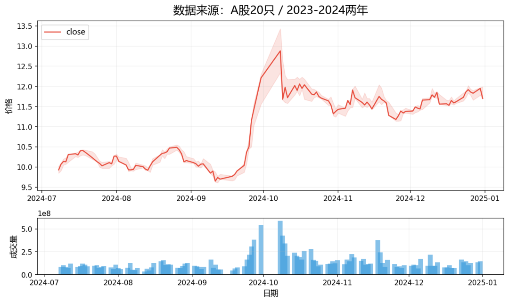
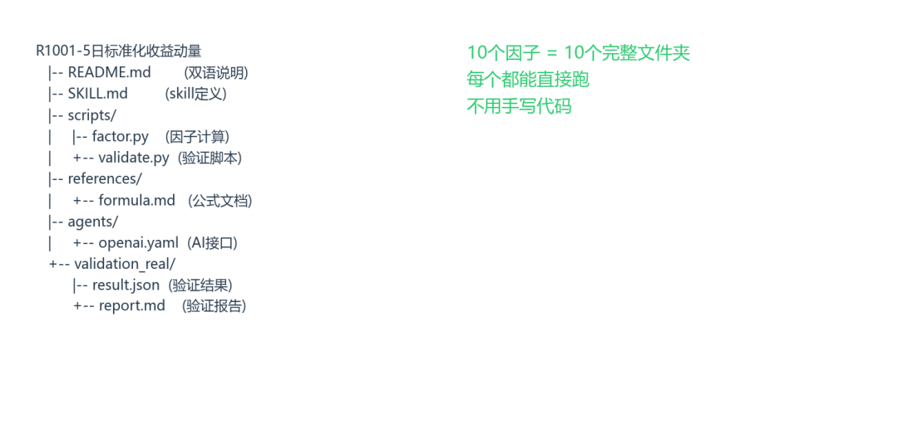
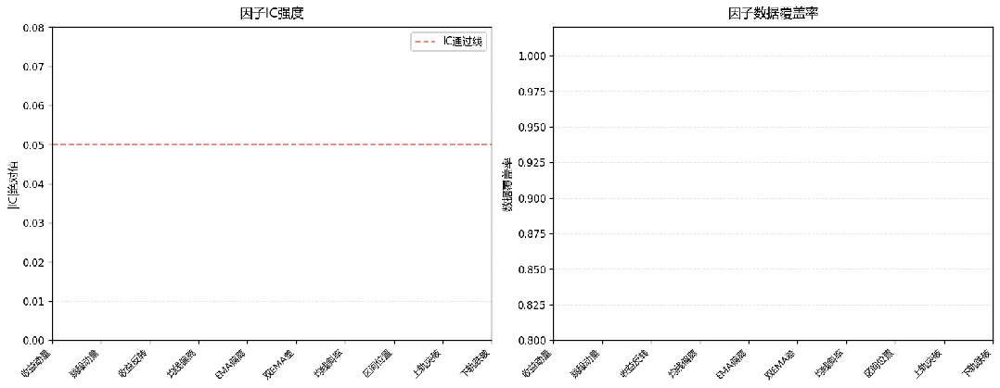

factor-skill-factory 生成流程演示
做量化研究的同学应该都有这个经历：脑子里突然蹦出一个因子想法，然后就得吭哧吭哧写代码，算指标，跑回测，验证IC……一个因子搞下来大半天没了。要是想同时试10个不同参数组合？基本上是周末加班预定。
最近我用了一个叫factor-skill-factory的东西，开始没抱太大希望，觉得可能就是那种"看起来很美"的工具。结果跑了一次，10个因子连带验证报告一起吐出来了，而且每个因子都是能直接运行的代码，不是那种只给你一个公式让你自己写的半成品。今天就来写写我的体验。
01. 准备数据：就这一张表
它只需要你准备一份标准OHLCV数据，长这样：date、symbol、open、high、low、close、volume，搞定。我顺手拉了A股20只票2023-2024两年的数据，一共9600多行，存成parquet格式。这个数据源你随便换，自己的tick数据、分钟线、甚至美股数据都行，只要列名对齐就OK。

数据面板：20只A股 2023-2024年 OHLCV
02. 跑脚本：一条命令的事
数据准备好之后，只需要改几个参数：想生成几个因子、起始ID是多少、输出目录在哪。然后敲回车，脚本就开始自己干活了。
它的流程是：先从数据里提取raw特征（比如收益率、均线偏离、RSI、ATR这些），然后做横截面标准化（z-score或者rank），最后自动跑验证。验证指标包括：
Rank IC（因子和下期收益的秩相关） ICIR（IC的信息比率，看稳定性） 五分组Q5-Q1多空收益 Top组换手率 数据覆盖率
整个流程：数据→生成→验证→导出Skill（动画演示）
03. 出来的是什么：每个因子一个文件夹
这是我挺惊喜的一点。它不是给你扔一个csv就完事了，而是每个因子都生成一个完整的独立文件夹，里面有：
- README.md
— 双语说明，中文英文都有，公式和参数写得明明白白 - SKILL.md
— 给AI用的调用接口，让agent知道怎么用这个因子 - scripts/factor.py
— 可以直接import的因子计算代码，不是占位符，能跑 - scripts/validate.py
— 验证脚本，你换一批数据再跑一遍就行 - validation_real/
— 验证结果和报告，json+markdown双格式 - agents/openai.yaml
— 大模型调用配置

每个因子都是一个完整的Skill包
这意味着什么？意味着你把某个因子文件夹复制到自己的项目里，import一下factor.py就能用，不需要再翻文档查公式。对新手来说很友好，对老手来说也能省掉很多重复劳动。
04. 验证指标长什么样
我这次生成的10个因子覆盖了动量、反转、均线偏离、EMA偏离、双EMA差、均线斜率、区间位置、上轨突破、下轨跌破。验证结果直接看柱状图：

10个因子的|IC|和数据覆盖率对比（动画演示）
大部分因子覆盖率都在97%以上，说明数据有效，NaN很少。IC值有正有负，动量和反转天然反向，这符合直觉。如果某个因子覆盖率为0，基本说明在这个窗口和股票池下没有触发信号，属于正常情况，换个大窗口或者更大的股票池就能改善。
05. 怎么改参数？门槛很低
默认窗口是5日，如果你想试10日、20日、60日，或者把z-score换成rank分位数，改一下配置里的window和transform就行。base类型也很丰富，从最简单的收益率到RSI、ATR、OBV斜率都有，挑一个你觉得靠谱的就行。
我试下来，最适合的使用场景是：快速筛选一批因子想法。与其坐在那纠结"这个5日动量到底行不行"，不如直接把5日、10日、20日、skip-return、反转各生成一个，跑完验证看IC，再决定哪个值得深入做回测。时间就是省在这里。
06. 适合谁用
如果你符合下面任意一条，我觉得可以试试：
刚入门量化，想快速跑通第一个因子，不想从零写pandas 已经有策略框架，但需要快速生产一批候选因子喂给模型 做因子挖掘，每天脑子里冒一堆想法，需要低成本验证 团队里有新人，想统一因子产出标准和文档格式
它不会替你写alpha策略，也不会做回测，但它把"从想法到可验证的因子代码"这一步自动化了。这一步在以前其实挺烦人的，要写对groupby、shift、rolling窗口，还要处理NaN和标准化，一不小心就引入未来函数。现在这些都被封装好了，你只用关心因子逻辑本身。
写在最后
我这次体验下来，最直观的感觉是：省时间。10个因子，从数据到验证报告，10分钟搞定。如果手写，光是写10个factor.py和10个validate.py就不止这个时间。而且每个因子的文档、双语README、AI接口配置都自动配好了，直接能用。
当然，最终能不能赚钱，还得看你的数据质量、股票池、交易成本模型。但至少在"快速验证想法"这个环节，它确实帮了大忙。推荐给还在吭哧手写因子的同学，值得一试。
🐙 开源仓库（github / quantskills）
· skill-quant-factor-skill-factory
🏠 社区 · quantskills.ai/skills/skill-quant-factor-skill-factory